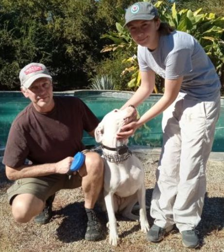

Beautiful, classic Doggo girl, over a year old, healthy, friendly, spayed, up to date on all vaccinations. Lots of basic training under her belt, adoptions only AVAILABLE IN SAN DIEGO COUNTY, CA! Nova arrives with a complete trousseau, including bedding, doggy-wear, toys, bowls, treat bags, and much, much more. We have invested a great deal into this valuable beauty. As you see in the photos, Nova is LOVING and GREAT with well-bred teenagers, too! While deafness can be a recessive trait for Doggos: We GUARANTEE that this VERY GOOD GIRL is absolutely not deaf at all. In fact, she can hear a food wrapper anywhere on your property, lol! Food driven and highly trainable. Our rescue will only consider families experienced with Doggo Argentinos/similar breeds. Please do your research before contacting us. While we have no papers on Nova, she certainly APPEARS to conform to the traditional standards of excellence- we have observed many of the traditional genetic, behavioral traits and characteristics of Doggos in this beauty!



Benefit at-risk, vulnerable and homeless animals in San Diego County and surrounding regions

Educate the public on the benefits of animal care, training, and spay/neutering pets

Facilitate spay/neuter and food pantry for indigent, at-risk, vulnerable and hungry animals

Place homeless, at risk and vulnerable pets into permanent and loving adoptive homes

Support the bio-diversity and growth of our California native plants and animals, as they are the critical environment for the health of our community